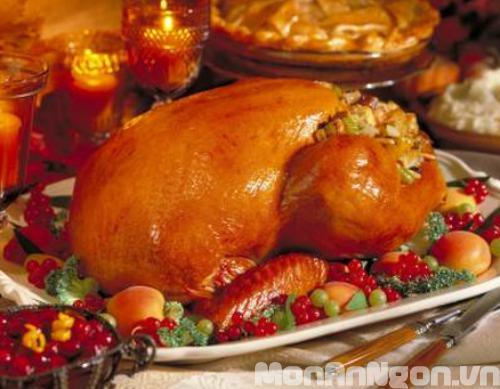

Cùng bắt tay làm thử thôi nào!
Chuẩn bị các nguyên liệu:
Để làm món gà tây đút lò đón giáng sinh cac bạn cần chuẩn bị các nguyên liệu sau:
Một con gà tây loại vừa, một ít rau mùi đã thái nhỏ, một củ hành tây (nửa củ băm, nửa củ xắt khoanh mỏng), một củ cà rốt xay nhuyễn.
Gia vị: một muỗng cà phê muối, một muỗng cà phê tiêu xay, bơ, 50ml rượu vang đỏ, 550ml nước dùng (nấu bằng hành tây, cà rốt, cần tây, lá thơm…).
Các bước làm:
- Gà làm sạch, chặt bỏ phần đầu, cổ, chân; bỏ hết nội tạng. Ướp gà với rau mùi, muối, tiêu, hành tây và cà rốt.
- Thoa một lớp bơ đã nấu tan và ít tiêu lên khắp thân gà.
- Thoa một ít dầu ăn vào khay nướng. Xếp hành tây thái khoanh vào khay, đặt gà tây lên trên, sau đó rưới nước dùng lên. Cho gà vào lò nướng ở nhiệt độ 3500C và nướng trong thời gian một tiếng 45 phút.
- Lấy phần nước gà trong khay, thêm ít rượu vang, gia vị, ít bột mì, nấu cho sánh lại để làm nước xốt. Gà tây thường ăn kèm với khoai tây chiên, đậu que, cà rốt, khoai tây luộc.
Chúc các bạn thành công, ngon miệng và có một mùa giáng sinh ấm áp với món gà tây đút lò này nhé